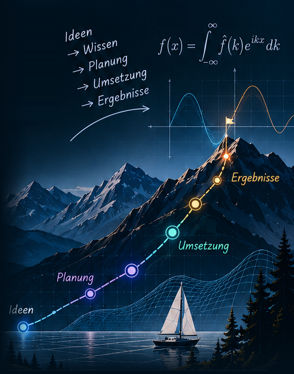

Drehbuch für die Kursleitung
MCP & Co.
Teil VI · Toolkit · Dauer gesamt: ca. 15 Min. · Braucht: GitHub, Skills, Mehrere Agenten · Führt zu: –
Material: MCP [CC] 22, Spec-Driven Development [CC] 30, Marketplaces [CC] 31, Tokens sparen [CC] 29
Abschnitte:
- 6.4 Die nächste Stufe · ca. 15 Min.
6.4 Die nächste Stufe
Dauer: ca. 15 Min.
Worum geht's
Ausblick, keine Übung: Was gibt es nach dem Workshop? Du musst nichts davon heute können. Du sollst wissen, dass es das gibt und wann es sich lohnt. Wir zeigen fünf Wege und die Kniffe, mit dem eigenen Kontingent sparsam umzugehen.
Lernziel
Nach diesem Thema können die Teilnehmenden …
- die fünf Stufen (GitHub, MCP, Spec Kit & Co., Subagents, Automatisierung) in einem Satz erklären
- einen nächsten Schritt für sich wählen und aufschreiben
- einfache Spartipps (
/clear,/effort, Modell) anwenden
So erklären wir es
Einstieg mit dem Flyer-Motiv: Idee → Planung → Umsetzung → Ergebnis. Wir haben heute eine Etappe gesegelt. Jetzt der Blick auf die nächsten Häfen.

Pro Stufe 1–2 Minuten, jeweils mit Alltagsbild:
- GitHub (Verweis 2.9): Das Projekt online sichern und teilen. Bild: Cloud-Backup plus gemeinsames Dokument. Lohnt sich, sobald du das Projekt nicht verlieren oder mit anderen bearbeiten willst.
- MCP (Model Context Protocol, [CC] 22): Steckdosen für Werkzeuge.
Bisher hat Claude nur deine Dateien gesehen. Mit MCP kann es zusätzliche Werkzeuge benutzen: einen Browser bedienen, in Dokumentation nachschlagen, auf eine Datenbank zugreifen. Der Agent entscheidet selbst, wann er sie braucht. Dazu: Claude kann ohnehin jedes Programm im Terminal bedienen (z. B.
ghfür GitHub), ganz ohne MCP ([KB] 09, §Any CLI is a tool). Beispiel für uns: Wetterdaten oder Kalender für den Törn-Planer. Vorsicht: Jedes angeschlossene Werkzeug ist ein Zugriff auf Daten. Nur Vertrauenswürdiges verbinden (O.1 Datenschutz). - Spec-Driven Development ([CC] 30): Du kennst es schon, wir haben es in Teil IV in klein gemacht: erst Spezifikation, dann Plan, dann Umsetzung. Es gibt Baukästen, die diesen Ablauf fest einbauen: Spec Kit, BMAD, Superpowers, OpenSpec.
Die Spezifikation ist die Wahrheit, nicht der Code. Sie überlebt auch, wenn Claude den Kontext vergisst. Es gibt kein Richtig oder Falsch. Für große Projekte spannend, für heute zu viel.
- Subagents (Verweis 5.5): Spezialisierte Helfer mit eigenem Arbeitsgedächtnis. Bild: Der Chef delegiert Recherche an eine Assistentin und bekommt nur das Ergebnis zurück. Mehrere arbeiten parallel, und eine zweite Person kann unabhängig prüfen.
- Automatisierung: Wiederkehrende Abläufe laufen von selbst, z. B. jeden Morgen eine Zusammenfassung neuer Quellen. Kollegen-Hinweis ([CC] 24): Für feste, immer gleiche Aufgaben keine KI nehmen, sondern die KI ein Skript schreiben lassen.
Plugins und Marketplaces ([CC] 31): Skills, Helfer und mehr werden als Pakete geteilt (wie grill-with-docs in 4.7). Wer viele Skills teilen will, kann eine eigene Sammlung anlegen. Wie immer: nur aus vertrauenswürdigen Quellen.
Tokens und Limits sparen ([CC] 29, 15), Stand 2026-11 ([KB] 16, [KB] 17). Ausführlich in O.5 Modell und Limits:
- Abos haben ein Limit pro rollendem 5-Stunden-Fenster und ein Wochenlimit, geteilt mit dem Claude-Chat (nicht „pro Session“). Je länger ein Gespräch, desto teurer jede Runde (3.6 Kontext). Mit
/usagesiehst du, wo es hingeht. /clearoft: neue Aufgabe, neuer Kontext.- Erst
/effortändern, dann das Modell: Ein Modellwechsel mitten in der Session macht den Zwischenspeicher ungültig,/effortbei aktuellen Modellen nicht./effortsteuert, wie gründlich das Modell nachdenkt. - Planen mit dem starken Modell, Umsetzen mit dem schnelleren: Das gibt es als Kürzel
opusplan(Opus im Plan-Modus, Sonnet beim Umsetzen). Jeder Wechsel kostet einen Neustart des Zwischenspeichers. - Haiku nicht für Agenten-Arbeit nehmen.
- Auf Pro werden Fable und
/fastaus bezahlten Nutzungsguthaben (Usage Credits) abgerechnet, nicht aus dem Abo-Limit.
Abschluss: die fünf Gedanken zum Mitnehmen (wie im Handout). Wir lesen sie vor und fragen, welcher am meisten hängen geblieben ist.
- Beschreibe Ergebnisse, nicht Code.
- Erst planen, dann bauen.
- Kontext ist alles.
- Mit Sicherheitsnetz experimentieren.
- Vertrauen ist gut, prüfen ist Pflicht.
Zeigen (Live-Demo)
Kurz, nur eine Sache live (3–4 Min.), Rest erzählen:
- Variante A, Plugins:
/pluginöffnen und durch einen Marketplace blättern ([CC] 31 „Show live“). Nichts installieren, nur zeigen. Befehl und Anzeige vorab prüfen. - Variante B, Subagents: Prompt „Lass drei Subagents parallel die Häfen A, B, C recherchieren und fasse die Ergebnisse zusammen.“ und zeigen, wie mehrere Aufgaben gleichzeitig laufen.
- MCP: Wenn vorbereitet, ein MCP-Server (z. B. Browser) als Beispiel. Sonst nur erzählen. Einrichtung vor dem Workshop prüfen (Befehl
claude mcp add, offizielle Doku).
Selbst machen (Übung)
Reflexion statt Übung (3–5 Min., schriftlich in notizen/naechste-schritte.md, Claude darf helfen):
Hilf mir, meinen nächsten Schritt zu wählen. Frag mich, was ich mit diesem Projekt vorhabe,
und schlage mir aus GitHub, MCP, Spec Kit, Subagents und Automatisierung genau einen vor.
Schreib das Ergebnis in notizen/naechste-schritte.md.
Geklappt, wenn: In der Datei steht ein konkreter nächster Schritt mit einem Satz Begründung. Meilenstein aus dem Handout: aufgeräumtes Projekt, ein eigener Skill, eine Idee, wie es weitergeht.
Stolpersteine & Fragen
- „Muss ich das alles lernen?“ Nein. Einen Schritt wählen, den Rest vergessen, bis du ihn brauchst.
- „Was kostet das?“ Preise und Limits ändern sich. Nicht aus dem Kopf nennen, aktuellen Stand nachsehen (Stand 2026-11: O.5).
- Sicherheit bei MCP und Plugins: Das sind Anweisungen und Zugriffe für deinen Agenten. Nur Bekanntes installieren, Berechtigungen lesen.
- „Welcher Baukasten (Spec Kit, BMAD …) ist der beste?“ Keine Empfehlung nötig. Erst mit dem Ablauf aus Teil IV Erfahrung sammeln.
- Abo-Regeln: Manche Werkzeuge anderer Anbieter dürfen nicht mit jedem Abo genutzt werden. Vor dem Einsatz die Nutzungsbedingungen lesen ([CC] 30).
Material & Quellen
- Handout: Schüler-Seite, „Die fünf Gedanken“ in Teil-Übersicht
- Wissensbasis: [KB] 16, [KB] 17, [KB] 09
- Kollegen-Folien: [CC] 15 – Modelle und
/effort; [CC] 22 – MCP; [CC] 29 – Tokens sparen; [CC] 30 – Spec-Driven Development; [CC] 31 – Marketplaces (Kürzel siehe material.md) - Offizielle Doku: code.claude.com/docs (MCP, Subagents, Plugins; vor dem Workshop prüfen)
- Bild: eigener Flyer
Stand: 2026-11-12